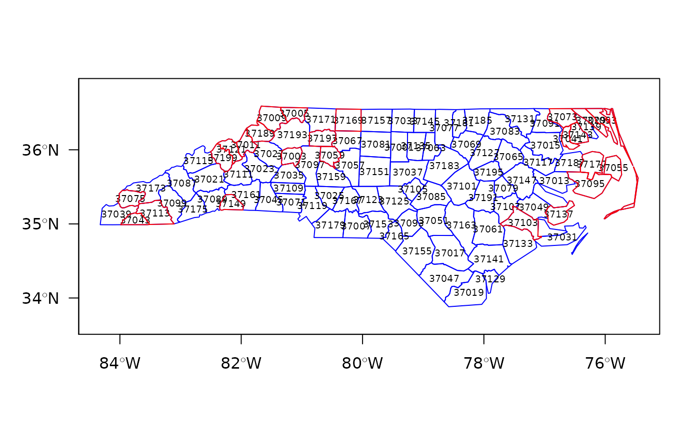
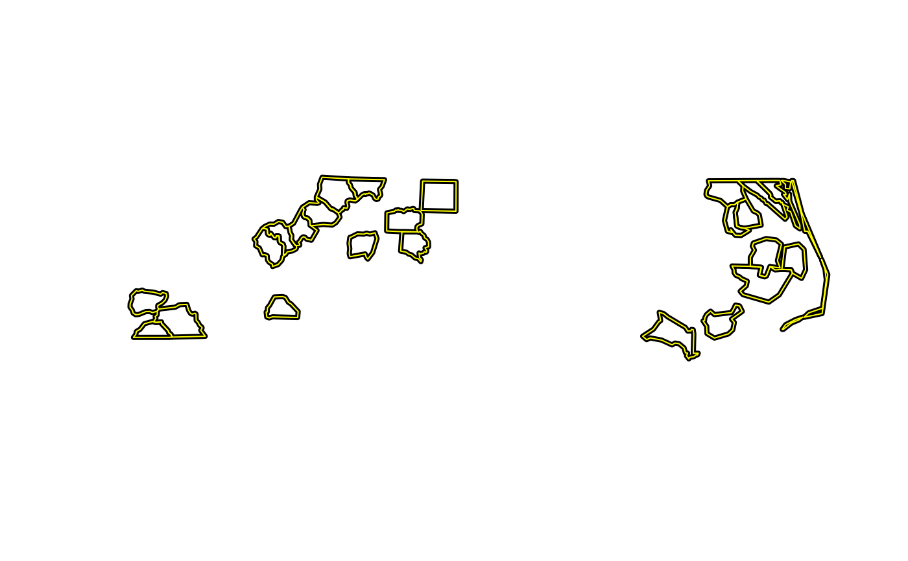

readShapePoly.RdThe use of this function is deprecated and it is not being maintained. Use rgdal::readOGR() or sf::st_read() instead - both of these read the coordinate reference system from the input file, while this deprecated function does not.For writing, use rgdal::writeOGR() or sf::st_write() instead.
The readShapePoly reads data from a polygon shapefile into a SpatialPolygonsDataFrame object. The writePolyShape function writes data from a SpatialPolygonsDataFrame object to a shapefile. Note DBF file restrictions in write.dbf.
readShapePoly(fn, IDvar=NULL, proj4string=CRS(as.character(NA)), verbose=FALSE, repair=FALSE, force_ring=FALSE, delete_null_obj=FALSE, retrieve_ABS_null=FALSE) writePolyShape(x, fn, factor2char = TRUE, max_nchar=254)
| fn | shapefile layer name, when writing omitting the extensions *.shp, *.shx and *.dbf, which are added in the function |
|---|---|
| IDvar | a character string: the name of a column in the shapefile DBF containing the ID values of the shapes - the values will be converted to a character vector |
| proj4string | Object of class |
| verbose | default FALSE - report type of shapefile and number of shapes |
| repair | default FALSE: some shapefiles provided by Geolytics Inc. have values of object sizes stored in the *.shx index file that are eight bytes too large, leading the function to try to read past the end of file. If repair=TRUE, an attempt is made to repair the internal values, permitting such files to be read. |
| force_ring | if TRUE, close unclosed input rings |
| delete_null_obj | if TRUE, null geometries will be removed together with their data.frame rows |
| retrieve_ABS_null | default FALSE, if TRUE and delete\_null\_obj also TRUE, the function will return a data frame containing the data from any null geometries inserted by ABS |
| x | a |
| factor2char | logical, default TRUE, convert factor columns to character |
| max_nchar | default 254, may be set to a higher limit and passed through to the DBF writer, please see Details in |
If no IDvar argument is given, the shpID values of the shapefile will be used as Polygons ID values; when writing shapefiles, the object data slot row.names are added to the DBF file as column SP\_ID.
a SpatialPolygonsDataFrame object
library(maptools) xx <- readShapePoly(system.file("shapes/sids.shp", package="maptools")[1], IDvar="FIPSNO", proj4string=CRS("+proj=longlat +ellps=clrk66"))#> Warning: readShapePoly is deprecated; use rgdal::readOGR or sf::st_readas(xx, "data.frame")[1:5, 1:6]#> AREA PERIMETER CNTY_ CNTY_ID NAME FIPS #> 37001 0.111 1.392 1904 1904 Alamance 37001 #> 37003 0.066 1.070 1950 1950 Alexander 37003 #> 37005 0.061 1.231 1827 1827 Alleghany 37005 #> 37007 0.138 1.621 2096 2096 Anson 37007 #> 37009 0.114 1.442 1825 1825 Ashe 37009#> Warning: writePolyShape is deprecated; use rgdal::writeOGR or sf::st_write#> Shapefile type: Polygon, (5), # of Shapes: 24axx <- readShapePoly(tmpfl, proj4string=CRS("+proj=longlat +ellps=clrk66"))#> Warning: readShapePoly is deprecated; use rgdal::readOGR or sf::st_read